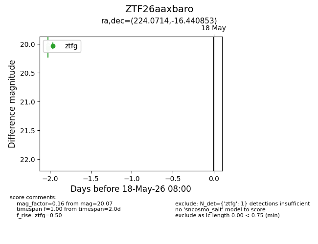
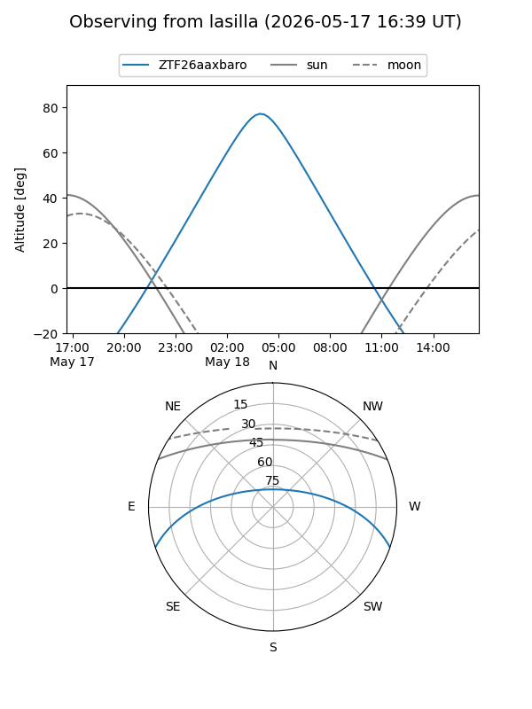
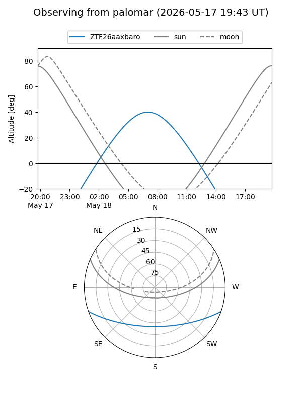

ZTF26aaxbaro
Target ZTF26aaxbaro at 2026-05-18 08:02
Aliases and brokers:
FINK: link
Lasair: link
ALeRCE: link
alt names
ZTF26aaxbaro (ztf,fink_ztf)
Coordinates:
equatorial (ra, dec) = 224.0714,-16.44085
equatorial (HMS+DMS) = 14:56:17.15,-16:26:27.07
galactic (l, b) = (341.3833,+36.94086)
Flags:
Photometry:
last ztfg=20.07
1 ztfg detections
Lightcurve

Visibility


Additional plots